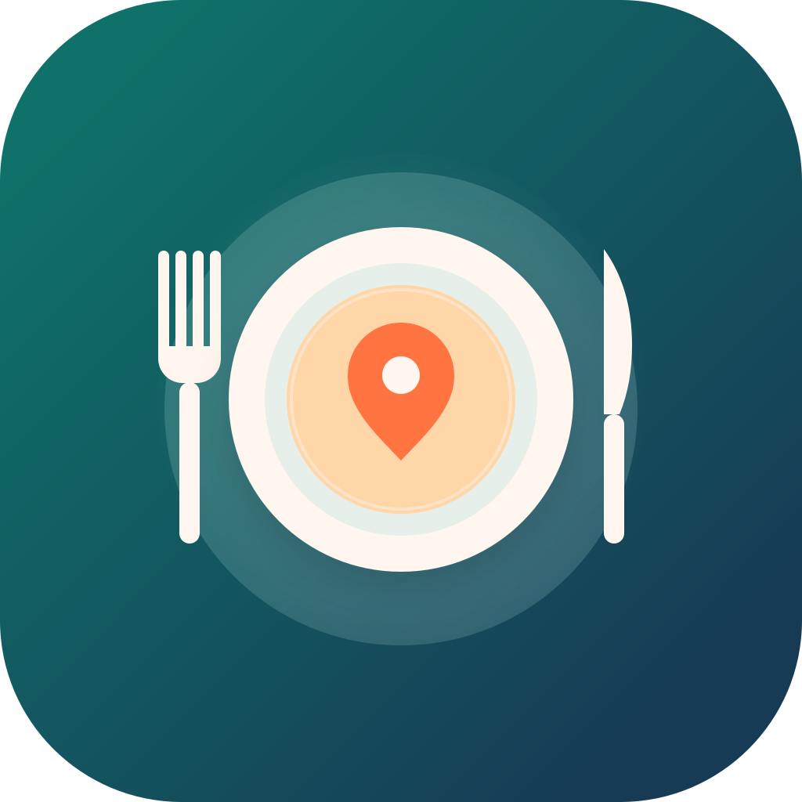
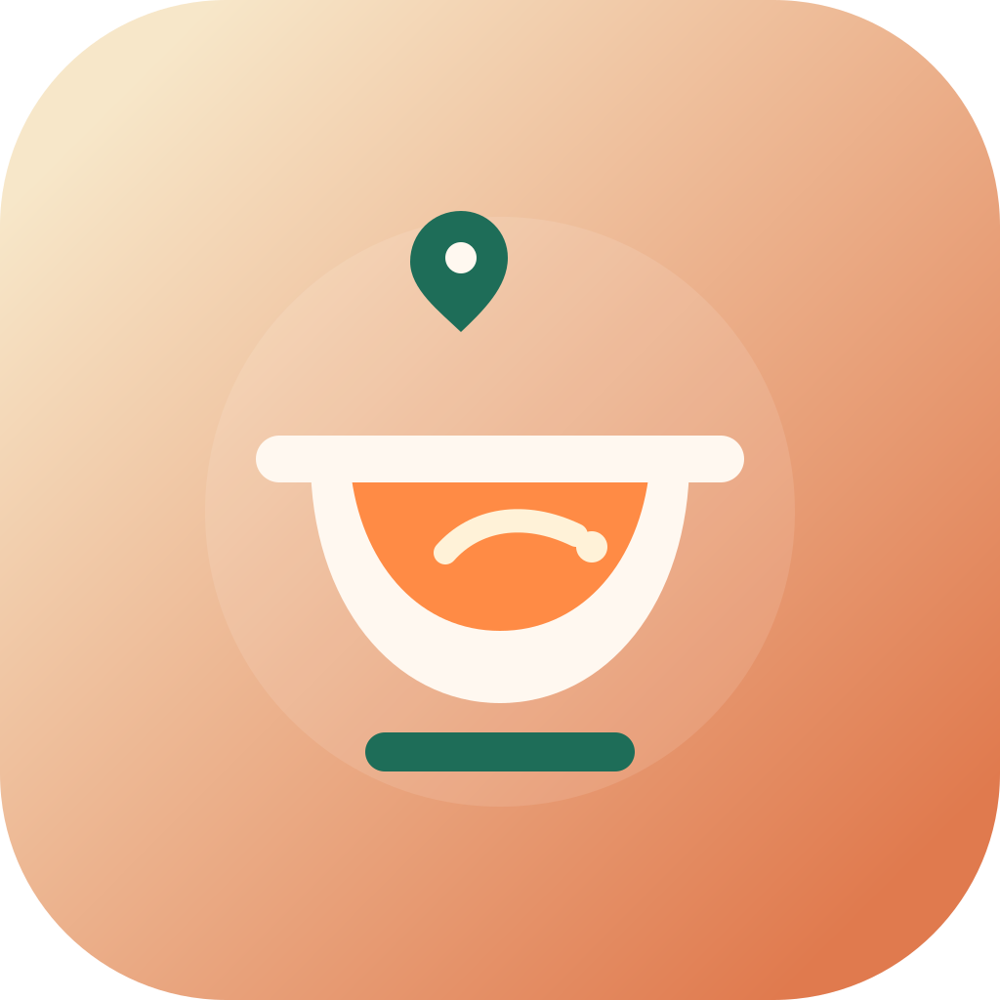
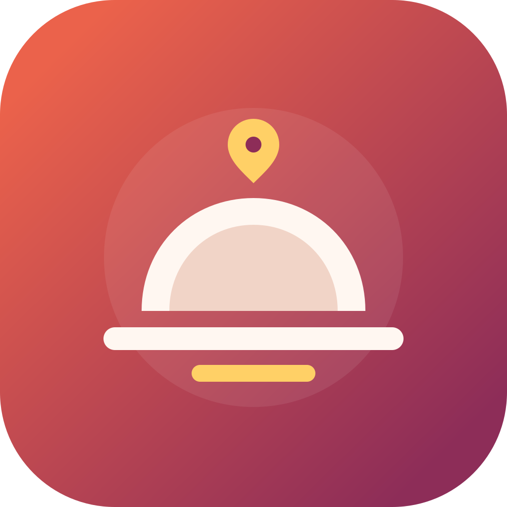

9. Place Setting
Clear food cue first, map cue second. Strongest if you want a literal meal-planning icon.
A cleaner second pass with fewer shapes, stronger spacing, and more app-icon discipline. These are intentionally simpler and more brandable than the earlier batch.

Clear food cue first, map cue second. Strongest if you want a literal meal-planning icon.

Friendlier and more product-like. Good balance between food and discovery.

Most premium and least cluttered. Feels polished and intentional in icon form.